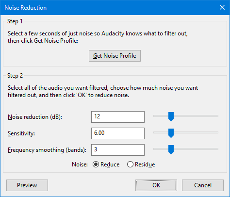

Noise Reduction
To use Noise Reduction, you need a region in the waveform that contains only the noise you want to reduce.
Be aware that it may be impossible to get a satisfactory removal when the noise is very loud, when the noise is variable, when the music or speech is not much louder than the noise or when the noise frequencies are very similar to those of the music or speech.
If your problem is mains hum or a high-pitched whistle, the use of a Notch Filter may help, which should be carried out before applying Noise Reduction.- Accessed by:
- 
Step 1 - Get Noise Profile
This first step teaches Audacity about the noise you want to remove by identifying the noise floor of the different frequencies that make up the noise.
- Select a region of the waveform which contains only noise. A minimum of 2048 samples (0.05 sec. at 44100 Hz sample rate) is needed, below which an error will be shown. A longer profile is better. If there are very different types of noise in different places in the track, they are best dealt with by grabbing the profile for the first type, reducing the noise for it, then grabbing the profile of the next type of noise and reducing that.
- Click .
- Click Get Noise Profile.
Step 2 - Reduce the Noise
- Select the entire region of waveform from which you want to reduce the noise, then set the Noise Reduction parameters. This is often best done by trial and error, adjusting the sliders and using the Preview button to listen to a few seconds of audio after noise reduction. Listening to the Residue (the sound that will be filtered out when you apply "Reduce") can also be useful in determining how much damage is being done to the desired (non-noise) sound.
- Click .
- Noise Reduction (dB): Controls the amount of volume reduction to be applied to the identified noise. Use the lowest value that reduces the noise to an acceptable level. Higher values than necessary may make the noise even quieter, but will result in damage to the audio that remains.
- Sensitivity: Controls how much of the audio will be considered as noise, on a scale of 0 (off) to 24 (maximum). Greater sensitivity means that more noise will be removed, possibly at the expense of removing some of the desired signal as well. Lower values may result in the appearance of artifacts in the noise-reduced audio. Set this control to the lowest value that achieves effective noise removal without the introduction of artifacts.
- Frequency Smoothing (bands): At values of 1 or higher, this control spreads the noise reduction into the specified number of neighboring bands. This modifies the signal you were intending to keep, but if artifacts remain in the noise-reduced audio the smoothing can make those artifacts sound more acceptable. There is a chance that smoothing will make the desired audio less clear, so where your desired signal is strong and of wide frequency range and the noise is light, try leaving this control at 0 (off).
If you hear artifacts in the noise-reduced audio after setting Sensitivity as high as possible without eliminating desired audio, try setting Frequency Smoothing to a value between 1 and 6 bands. The width (in Hertz) of a frequency band is dependent on the sampling frequency of the track. Width = sampling frequency / 2048 = 21.53 Hz at 44100 Hz sampling rate.
Time smoothing is always applied by Noise Reduction (attack of 20 milliseconds and release of 100 milliseconds) but the settings are not configurable. Any frequency smoothing you request is applied after time smoothing.
The default setting is setting is 3, settings lower than this tend to favor music and higher settings tend to favor spoken word.
- Noise:
- Reduce: Select this option to filter out the noise from the selection.
- Residue: Select this option to hear the sound that would be filtered out if you chose "Reduce". This is useful for finding the optimum settings that do not damage the audio. If you can hear recognizable bits of the desired sound in the residue, it is likely that you have set Noise Reduction too high or Sensitivity too high.
The buttons
Clicking on the command buttons give the following results:
- plays a short preview of what the audio would sound like if the effect is applied with the current settings, without making actual changes to the audio. The length of preview is determined by your setting in , the default setting is 6 seconds.
- applies the effect to the selected audio with the current effect settings and closes the dialog
- aborts the effect and leaves the audio unchanged, closing the dialog
Artifacts can happen if the noise floor is higher than was estimated, either because Sensitivity was set too low, or because the noise profile was not representative of the noise throughout the track. Although most of the noise will be suppressed most of the time, random artifacts may occur, which can be even more objectionable than the original noise. For a more technical explanation of artifacts, see How Audacity Noise Reduction Works in the Wiki.
Tips
After creating a noise profile, Ctrl + R or will apply Noise Reduction at its current settings.
Reducing noise usually results in some distortion. This is normal and there is nothing you can do about it. When there's only a little bit of noise, and the signal (that is, the voice, music or other desired sound) is much louder than the noise, this effect works well and there's very little audible distortion. Unfortunately, when the noise is very variable or very loud (the signal is not much louder than the noise) the result may be too distorted.
If you are still having problems the following tips may help.
- Select
 Residue from the Noise: options, click , listening for unwanted traces of the desired signal. You can usually reduce the amount of desired sound in the residue by decreasing Sensitivity or decreasing Noise Reduction.
Residue from the Noise: options, click , listening for unwanted traces of the desired signal. You can usually reduce the amount of desired sound in the residue by decreasing Sensitivity or decreasing Noise Reduction.
- Decreasing Sensitivity decreases the chance of losing sound you want to keep (as indicated by hearing bits of the desired audio in the residue), but increases the chance of there being artifacts sounding like "tinkly bells" when applying the effect with Reduce selected.
- Decreasing Noise Reduction also decreases the chance of losing sound you want to keep (as indicated by hearing bits of the desired audio in the residue), but will increase the amount of noise remaining in the result when applying the effect with Reduce selected.
- Decreasing Sensitivity decreases the chance of losing sound you want to keep (as indicated by hearing bits of the desired audio in the residue), but increases the chance of there being artifacts sounding like "tinkly bells" when applying the effect with
- When you have found settings of Sensitivity and Noise Reduction that appear to do the least damage to the desired sound (based on there being little of that sound in the residue), click the Reduce radio button then click to apply the effect.
- Amplify or Normalize may be done before or after Noise Reduction.
- Do any Notch Filtering or Click Removal before doing noise reduction.
- Do any compression or any other effects not mentioned above after doing noise reduction, not before.
When using Noise Reduction in Macros the profile is captured as below.
|
| Noise Reduction with cassette tapes: Cassettes are slightly different from other sources in that its not uncommon for the noise profile to change through the course of the tape, due to accumulation of dirt on the tape heads, either during play or during record, or both.
To optimise the performance of Audacity's Noise Reduction it is best to use a noise sample near the beginning of the tape rather than the end. Using a sample late in the tape will sometimes cause poorer discrimination between noise and signal, as some of the higher frequency noise will be missing or reduced in amplitude. |
Advanced Tips
- For a more technical explanation of the algorithm used in Noise Reduction, see Noise Reduction algorithm in the Wiki.
- Also see Sample workflow for LP digitization which lists some alternative noise reduction software that you can use as part of your audio restoration routine.
Limitations
- Taking a noise profile in a track at one sample rate then removing noise in another track at a different rate will produce poor results and is therefore prohibited with an error "Sample rate of the noise profile must match that of the sound to be processed".
- Taking a noise profile over two or more tracks at different sample rates is prohibited with an error "All Noise Profile data must have the same sample rate".
Alternative Noise Reduction Techniques
Please see this page for some additional noise reduction techniques.